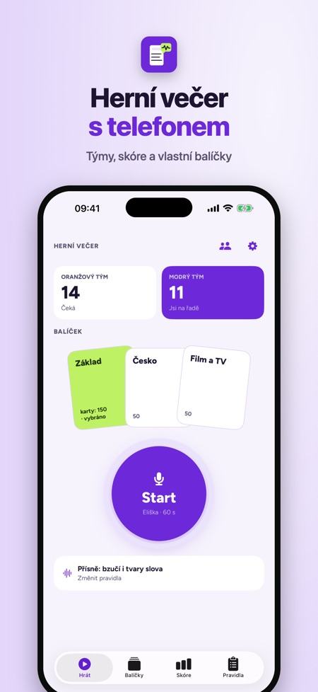
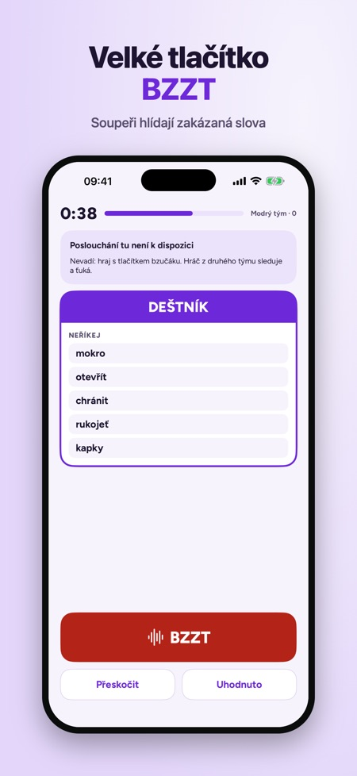
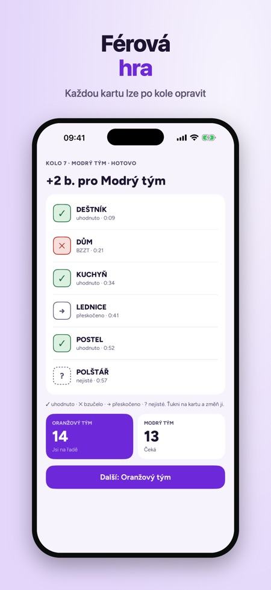

Popisuj slova, tým hádá. Novinka na Vánoce a Silvestr: 100 karet od betléma po lití olova. Popiš slovo bez zakázaných, soupeři mačkají bzučák a telefon počítá čas a skóre.



Zoemwoord je hra na hádání slov pro partu a rodinu. Kdo popisuje, drží telefon a vysvětluje slovo z karty, aniž by řekl pět zakázaných slov. Soupeři hlídají a při chybě zmáčknou velké tlačítko BZZT. Telefon hlídá čas, počítá body a pamatuje si, kdo vede.
Čeština zatím nemá rozpoznávání řeči v zařízení, a proto se česky hraje s tlačítkem bzučáku. Zvuk se nikdy neodesílá na server.
Balíček Základ se 150 kartami, dva týmy a hra bez nákupu. Zoemwoord Plus je jednorázový nákup: všechny balíčky, vlastní karty a sdílení, až šest týmů a historie večerů. Bez předplatného, bez reklam.